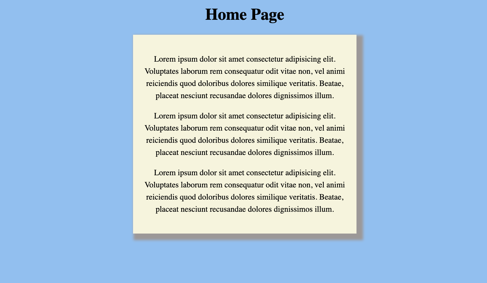

Blog Post 4 - Learning Web Design
After reading chapters 14, 15, 16, and 17 of Learning Web Design, I have learned more about the use of CSS to enrich the elements of a web page, what I tried was the box drop shadows in Chapter 14, "Thinking Inside the Box" (in page 382 & 383). To complete this exercise I created an HTML and CSS file, then added some styles to the CSS, and used "box-shadow" to shadow the background of the article. I gave the box shadow a 5-pixel blur and a 6-pixel spread and experimented with different colors. Pictures of the completed exercises are below:
